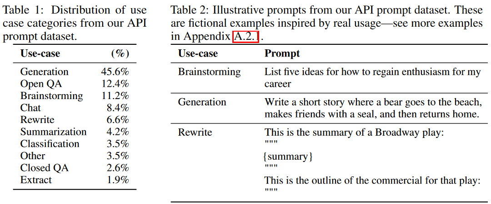
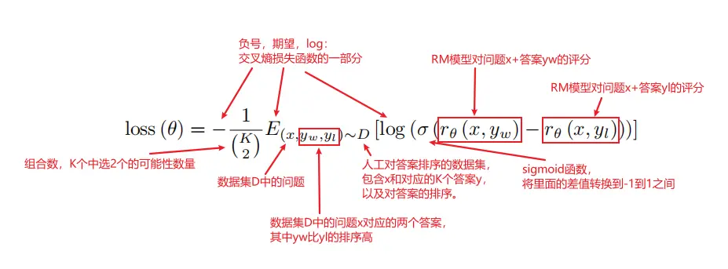
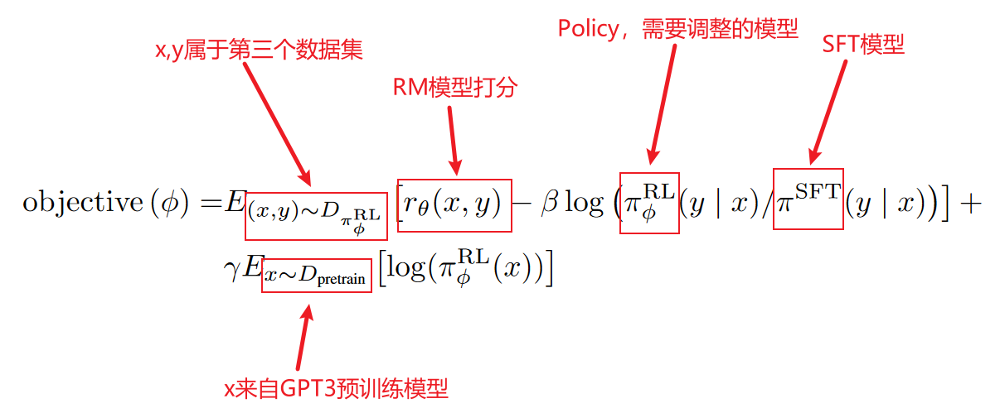
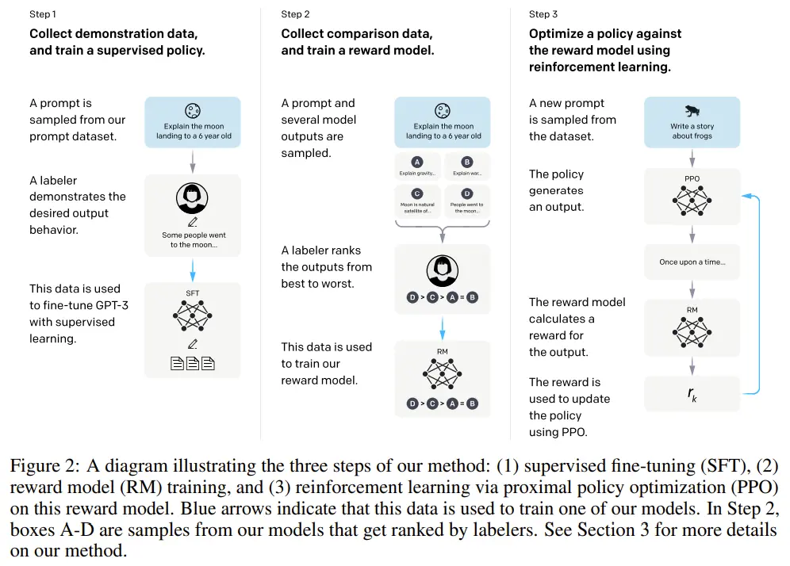
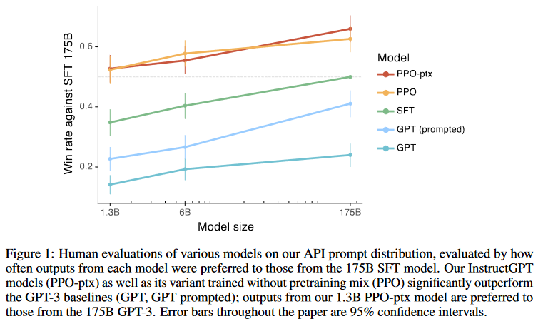
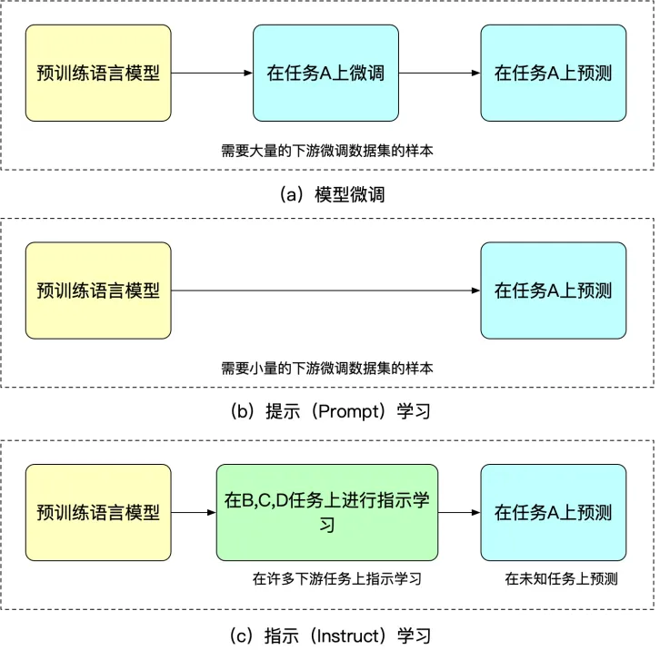
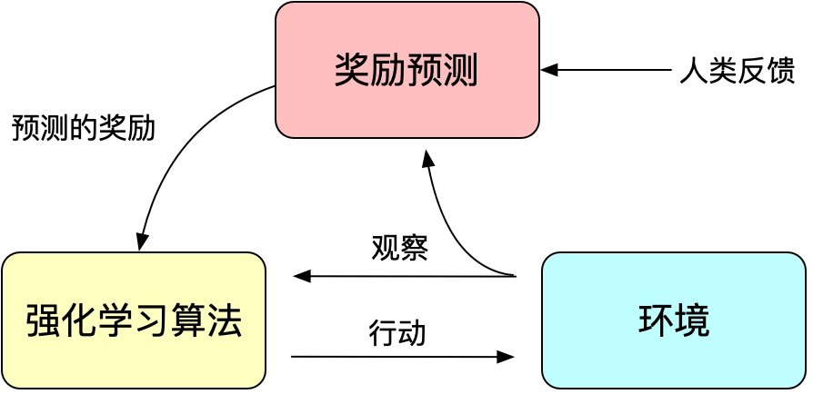

论文精读 InstructGPT
6.InstructGPT
ChatGPT
- Chat GPT 既没有发表在 NeurlPS 上面，也没有发表在 EMNLP ，甚至连一篇论文都没有
- InstructGPT是微调的GPT-3.5模型
0.前言ChatGPT
0.1 ChatGPT 的四个应用
官方给出四个使用的场景
1、ChatGPT asks the clarifying questions to debug code

2、ChatGPT initially refuses to answer a question that could be about illegal activities but responds after the user clarifies their intent
- ChatGPT 能在安全性上避免进行一些非法的回答

3、ChatGPT is able to understand the reference (“it”) to the subject of the previous question (“fermat’s little theorem”)
- ChatGPT 是能够理解上下文的，它能够记住之前的问题（它能够做一个 8000 词的上下文，也就是说如果回答是在 8000 词以内的话是能够联系上下文的）

4、ChatGPT provides responses to follow-up instructions
- ChatGPT 是能够理解自己的局限性的，它明白自己有哪些事情是自己做不到的

以上是官方给出的应用样例，还有一些其他的应用：
- 把它伪装成一个操作系统，让它来执行代码
GPT-3发布之后的一两年之内，出现了上百种应用，和 GPT-3 相比，ChatGPT 是基于对话的形式，而且是多轮对话，ChatGPT 更加自然一点，符合人的交互习惯，所以不出意外的话，未来也会出现越来越多的应用。
（根据 OpenAI 的一贯作风，它会先发布模型，过几个月之后再发论文，目前只有模型和博客，论文暂时还没有发布）
0.2 ChatGPT Methods
ChatGPT 用的是跟 InstructGPT 相同的方法
- InstructGPT 其实跟 GPT123 更相近，它的数据格式是一个 prompt
- ChatGPT 的输入是一个对话的形式，所以说在数据收集上面和 InstructGPT 有一点不同：在标注数据的时候需要做成多轮对话的形式

（这张图和 Instruct GPT 也是相同的）
ChatGPT 是在 GPT3.5系列的基础上进行微调得来的，这里的 GPT3.5 应该就是在GPT-3 代码的基础上进行修改得到的
0.3 InstructGPT
- OpenAI 的工作都是基于前面的工作，工作是具有连续性的
- InstructGPT 这篇文章发表于 2022 年 3 月 4 日
- 论文标题：Training language models to follow instructions with human feedback
- 论文链接：https://arxiv.org/abs/2203.02155
其他参考资料：
1.标题、作者
Training language models to follow instructions with human feedback（训练语言模型，使得它们能够服从人类的一些指示）
语言模型每次是给定一段东西，然后去预测下一个词，它是一个自监督模型，所以认为它是没有标号的。如果想让语言模型去解释某一个概念的话，就需要文本中出现过类似的东西，因此模型的行为取决于文本搜集的好坏。一般用来训练的文本大概都是几十亿、几百亿的词，所以具体里面有什么东西是不清楚的，只是大概知道文本质量的好坏，然后进行一定的清洗。因此模型的精细度是不够的，所以对整个模型的控制比较弱，一般就是大力出奇迹，把数据输入进去，得到什么样的模型就是什么
这样的问题在于：
- 有效性： 如果想让模型去做某个事情，但是模型始终学不会怎么办？因为文本中没有相应的东西。
- 安全性： 模型输出一些不应该输出的东西怎么办？这对于大公司来讲将会造成很大的灾难
最简单的办法就是标注一些数据，所以这篇文章的省流版本就是标注一点数据，然后将语言模型做一次微调，这样就能获得更好的效果
- 整个 OpenAI 或者说现在这些大的模型都是号称往无监督或者是自监督的方向发展，现在如果说还是需要进行数据标注，效果会很好，如果这么说的话，就是自相矛盾了，所以文章需要进行包装
Author

- 作者基本上都是 OpenAI 的员工，带“ *”的是主要作者
2.摘要
把语言模型变大并不能代表它们会更好地按照用户的意图来做事情，大的语言模型很可能会生成一些不真实的、有害的或者是没有帮助的答案。换句话说，这些模型没有和用户站在一起（目标一致，达成合作）
- 如果读者的关注点主要在研究上面，就可能会低估这一段话的重要性。因为在研究上，很多时候训练一个模型，在标准数据集上把整个分数刷上去就行了。但是在工业上的部署，也就是在 AI 模型的落地上面，安全性和有效性是非常重要的。
- 比如一个机器学习的产品，因为有一些地方没有做到位，从而引发争议导致整个产品下线，这种例子很多：
- 2015 年有用户反馈 Google 的照片服务将黑人的标签识别成了 Gorilla（大猩猩） ，导致 Google 紧急上线将 Gorilla 这个标签在模型中删掉。三年之后，Google photos 还是把 Gorilla 整个标签去掉了，也就是说，如果照片中有真的 Gorilla 的话，Google 是不会将它识别出来的；
- 2021 年纽约时报报道说 Facebook 因为它的 AI 算法把它的黑人视频加了一个灵长类动物的标签而道歉，跟之前的黑猩猩事件如出一辙；
- 微软发布的一个小冰聊天机器人的英文版在推特上发布 16 小时之后，用户发现它有一点种族歧视的语言，然后微软就紧急将它下架了，然后重新训练一个模型上线之后结果又乱讲话，最后导致整个产品被下线；
- 最近的例子，Meta 发布了一个叫做 Galactica 的模型（https://galactica.org/explore/，由 paper with code 团队发布），它能够做很多学术相关的事情，比如讲一个公式翻译成一个语言来进行描述或者说将一段代码用数学公式写出来，以及解决数学题，在模型发布不久之后，就有人发现这个模型会生成一些错误的或者是有偏见的但是听上去很正确的东西，他认为这个是一个非常危险的事情，等于是在一本正经的胡说八道并且使别人相信了，这些批评导致模型在发布的三天之后，Meta 就将这个模型下架了。。。
所以当将一个机器学习的模型部署到产品中的时候需要非常小心，需要特别注意它出错的地方，避免在公关上出现问题。通常对于简单的分类问题来说相对会好一点，只需要将标号中一些有争议性的标号拿掉，但是语言模型的输出特别灵活
- 一方面研究者享受这种灵活性带来的巨大的应用场景
- 另一方面，这种灵活性的输出，导致出错的概率会更大
GPT-3 发布这么久，有出过什么事情吗？
- 其实是有的，只是 OpenAI 作为一个创业公司，媒体对创业公司的容忍度相对来讲会高一些
- 但是如果是一些大厂，比如 Google 这样的大公司，把 GPT-3 这种模型做成一个产品的形式时，一旦出现什么问题，就会出现很大的公关问题
- 事实上，ChatGPT 已经在安全性上做了很多工作，避免去回答一些非法的问题，实际上大家早就找到了各种可能性来绕开这些限制。
- 其实有很多的可能性让ChatGPT发表一些不适当的言论，只是现在 OpenAI 的口碑比较良好，如果说换一个大厂将同样的模型发表出来，结果就不一样了
这篇文章中展示了怎样对语言模型和人类的意图之间做 align ，具体使用的方法是使用人类的反馈进行微调（fine-tuning with human feedback）
- 注意这里使用的是 human feedback，不是使用的带标签的数据
具体做法是写了很多的 prompt ，在** OpenAI 的 API 上收集到各种问题，然后用标注工具将这些问题的答案写出来，这样就标注了一个数据集，然后在这个数据集上对 GPT-3 的模型做微调**。
然后又收集了一个数据集，这个数据集就是对每个模型的输出（问它一个问题，它可能会输出很多模型，因为它是一个概率采样的问题）进行人工标注，标注出好坏的顺序，有了这个顺序之后，再用强化学习继续训练出一个模型，这个模型就叫做 InstructGPT
所以作者主要做了两件事情：
- 首先标注了一些数据，将问题和答案都写出来然后训练一个模型
- 接下来又做了一个排序的数据集，然后用强化学习再训练出一个模型
因此一共有两个模型，结果证明在人类的评估上面， InstructGPT （有标号的数据集）1.3B 的模型参数要好过最大的 GPT-3，也就是175B，也就是说一个 1% 大小的模型的效果反而更好一点。另外 InstructGPT 能在真实性上更高地降低有害的答案出现的概率。在公开的 NLP 数据集上，它的性能也没有显著的下降。
因此，等价于是说 InstructGPT更小，但是效果更好，而且在一些别的公开数据集上性能也没有变差；当然，不得不承认的是 InstructGPT 还是会犯一些简单的错误。
整个摘要的核心思想是说，作者标记了一个数据集，然后在这个数据集上比 GPT-3 要小 100 倍的模型然后在上面做微调的效果比最大的 GPT-3 模型的效果可能还要好一些
- 对于这个结果，也不是特别意外，因为标注的数据集信噪比更加好一点，所以学习起来更加简单一点，不需要那么大的模型
- transformer 模型就是对整个数据做压缩，把整个数据信息压缩进模型的参数，信噪比越高，而且标注的信息和最后要评估的数据集可能更近一点，所以就导致不需要压缩那么多的东西
- 信噪比：方差即不确定性，不确定性即信息。也就是说对于一组样本来说，其方差越大，代表样本中含有的信息越多，所以可以将方差看作信息量的一个度量。因此，信噪比的统计学含义就是：能够被模型解释的信息与不能够被模型解释的信息之比。
- 虽然 OpenAI 和一些大的厂都是在说，训练一个特别大的模型，根本不需要标注，效果特别好，实际上在实用上来讲，如果这个方向一路走到底的时候，计算能力不一定能吃得消，而且数据可能增长到某个程度之后，可能覆盖的地方还是存在问题，而在那些想要的特性但是模型做不到的地方适当加入一些人类的标注，其实相对来讲更加划算
所以一个好的方法需要平衡算力的需求和人类标注的代价
2.导论
导论就是摘要中所讲的故事的一个稍微详细的版本，首先讲问题，然后讲方法，最后讲结果
2.1 存在的问题
大的语言模型能够通过提示的方式把任务作为输入，但是这些模型也经常会有一些不想要的行为，比如说捏造事实，生成有偏见的、有害的或者是没有按照想要的方式来，这是因为整个语言模型训练的目标函数有问题。
- 实际的目标函数：语言模型的目标函数是在网上的文本数据中预测下一个词，即给定一个文本中的一段话，然后预测这段话后面的词
- 我们希望的目标函数：根据人的指示来生成安全的、有帮助的答案
- 两个目标函数其实是不一样的，所以作者把真正训练的目标函数和所想要让这个模型做的事情之间的差距叫做语言模型目标函数是没有 align。
所以这篇文章的目的就是让语言模型更好一点：
- 希望语言模型能够更有帮助性，能够解决想让它解决的事情
- 能够更加真诚，不要捏造事实，要实事求是
- 无害，既不要生成让人反感的输出，也不要生成一些可能对别人造成危害的输出
2.2 实现方法
基于人类反馈的强化学习（reinforcement learning from human feedback，RLHF）基于人类反馈的强化学习
图二（InstructGPT 怎样从 GPT-3 一步一步训练而来的，一共标注了两个标注数据集，生成了三个模型）

Step 1：收集样本数据，有监督微调
- 首先找了各种人来写各种各样的问题（这个问题在 GPT 中叫做 prompt ，具体来说就是向一个 6 岁的小孩解释什么是月亮；这些问题也可能是来自之前用户在向 GPT-3 提交的各种问题中筛选出来的）
- 然后继续让人写答案（比如说例子中问题的答案就是一些人去了月球。。。）
- 在有了问题和答案之后，就可以将这两个拼成一段话，然后在这个上面对 GPT-3 进行微调
因此，虽然这是人类标注的数据，但是在 GPT 眼中都是一样的，都是给定一段话然后预测下一个词，所以在微调上跟之前的在别的地方做微调或者是做预训练没有任何区别
GPT-3 的模型在人类标注的数据上微调出来的模型叫做 有监督的微调（supervised fine-tuning），这是训练出来的第一个模型，其实训练出来的这个模型也能用，但是它的问题在于生成答案是一件很贵的事情，所以很难让人把所有各式各样的答案都写出来
Step 2 : 收集排序数据，训练奖励模型
- 给定一个问题，让上一步训练好的预训练模型 SFT 生成答案
- GPT 每一次预测一个词的概率，可以根据这个概率采样出很多答案，通常来说可以用 beam search
- 这里生成了四个答案，然后把这四个答案的好坏进行人工标注，进行排序标注
- 有了这些排序之后，再训练一个奖励模型（Reward Model，RM），这个模型是说给定 prompt 得到输出，然后对这个输出生成一个分数，可以认为这个分数是一个奖励或者是打分，使得对答案的分数能够满足人工排序的关系（大小关系保持一致），一旦这个模型生成好之后，就能够对生成的答案进行打分
Step 3：使用RM模型优化SFT模型
- 继续微调之前训练好的 SFT模型，使得它生成的答案能够尽量得到一个比较高的分数，即每一次将它生成的答案放进 RM 中打分，然后优化 SFT 的参数使得它生成的答案在 RM 中获得更高的分数。
备注：两次对模型的微调：GPT3模型 → SFT模型 → RL模型，其实这里始终都是同一个模型，只是不同过程中名称不同。
- 需要SFT模型的原因： GPT3模型不一定能够保证根据人的指示、有帮助的、安全的生成答案需要人工标注数据进行微调。
- 需要RM模型的原因：标注排序的判别式标注成本远远低于生成答案的生成式标注。
- 需要RL模型的原因：在对SFT模型进行微调时生成的答案分布也会发生变化，会导致RM模型的评分会有偏差，需要用到强化学习.
最后训练出来的模型就叫做 InstructGPT ，它是 GPT-3 经过以上三个步骤训练得来的。
从技术要点上来看，有以下几个技术：
- 第一步中的数据标注的实现
- 第二步中的数据排序的实现
- 微调和 GPT-3 的微调是一样的
- RM 模型的训练
- 有了 RM 模型之后，如何通过强化学习来训练
2.3 结果描述
最后是关于结果的一些描述：
- 标注人员觉得 InstructGPT 的答案要比 GPT-3 的答案明显要好很多；
- InstructGPT 在真实性上要比 GPT-3 好一些；
- InstructGPT 在生成有害的输出上要比 GPT-3 好一点，因为它可以说不想回答某一个问题，但是在偏见（比如性别歧视）上并没有太大的提升；
- 在做微调的时候通常是根据某一个目标做微调，可能会使得模型在一些别的任务上的性能会下降。作者的做法是在做强化学习的时候，将最原始的目标函数拿回来，使得虽然在做完微调之后在这种 QA 上面做的更好一点，但是在一些其他的任务，比如说公有的 NLP 数据集上也不至于说性能下降很多
- 虽然在整个过程中进行了人工标注，但是标注非常有主观性，因为是写一段文字或者是判断两段话的好坏，作者找了一些没有标注数据参与训练的标注人员，只是从结果的角度去评估 InstructGPT 的话他们还是觉得 InstructGPT 要比 GPT-3 好一些（人与人之间的喜好是有一定的相关性的）
- 作者将 GPT-3 在 InstructGPT 的数据和其他的公用数据集 FLAN 和 T0 上进行了微调，最后比较发现，还是在自己的数据上微调出来的效果会好一些，也就是说别人的数据可能和自己的数据在分布上不太一致，所以意味着微调对数据还是比较敏感的。
- 作者标注了大量的问题，但是因为语言模型比较灵活，不可能将所有的问题都标注出来，所以作者发现虽然标注的问题里面只有少部分是总结代码或者是问代码相关的问题，在训练完之后发现实际的模型在这方面的表现还是不错的，也就是说所训练出来的模型其实是有一些泛化性的，因此这也意味着其实也没有必要一定要将所有不同的问答类型全部标注，模型根据之前的先验知识具有一定的泛化性。
- 模型也还是会犯一些简单的错误，因为文中所展示的都是一些模型所表现出来的比较出乎意料的东西，但是可能在一些大家习以为常的地方很可能会出错，所以在这一点上可以认为 InstructGPT 或者说甚至现在的 ChatGPT 多多少少还是像一个玩具，而不是一个工具。
- 工具不需要惊喜，但是需要保证可用性，不能在一些正常的地方出错
3.方法
本文所使用的方法就是前面工作的方法，只是前面的工作主要用在文本样式的一致性和渐进式总结（类似于问答的场景下），方法本身没有本质上的区别（这些技术虽然都是 openAI 前面的研究，但是并不是 InstructGPT 的原创，这些技术之前就有了，只不过 InstructGPT 使用这些技术在一个新的数据集上重新训练了一下）
3.1 Dataset
（1）Prompt 数据集
首先标注人员写了很多的问题，这些问题包括：
- Plain：让标注人员写任何的问题
- Few-shot：让标注人员写一个指令，有各种不同的指令，然后里面有后续的一些问题回答
- User-based：用户提供了一些想要支持的应用场景，然后将其构建成任务
有了这些最初构建出来的 prompt 之后，作者训练了第一个 InstructGPT 模型，得到这个模型之后，将其放在 playground 中供大家使用。大家在使用的过程中可能又会提出一些问题，然后又把这些问题采集回来，并进行筛选。
- 对每个用户最多采用 200 个问题
- 在划分训练集、验证集、测试集的时候是根据用户的 ID 来划分的（这个也很重要，当收集了很多来自不同用户的各种问题之后，不能把这些问题放在一起进行随机划分，因为一个用户可能会问一些类似的问题，如果这个问题同时出现在训练集和测试集中，就会造成数据污染，所以按照用户进行划分更加公平）
- 如果问题中包含了很多的用户信息，比如出现了人名，就将其过滤掉
通过这个方法就得到了更多的 prompt。
（2）三个模型的数据集
在有了这些 prompt 之后就产生了三个不同的数据集，数据集之间可能共享了一些问题：
- SFT 数据集：让标注人员直接写答案。用来训练 SFT 模型的数据集中有 13000 个样本。
- RM 数据集：用来训练一个 RM 模型，只需要进行排序就可以了。用来训练 RM 模型的数据集中有 33000 个样本。
- PPO 数据集：用来训练强化模型，也就是 InstructGPT 。这个时候就不需要标注（标注来自于 RM 模型的标注）。用来训练 InstructGPT 模型的数据集中有 31000 个样本。
（3）一些数据集的例子
表 1 展示了 prompt 数据集中使用 API 的用户的用途分布情况，最多的是生成一些东西，其次是一些开放性的回答、头脑风暴等
表 2 中展示了一些例子
- 头脑风暴：列出五个能够使我保持对事业的热情的五个想法
- 生成类：生成一个短故事
- 重写：给定百老汇 show 的总结，将其中的要点列出来

在文章的附录 A 中提供了大量的 prompt 的例子

3.2 数据标注
作者在 Upwork（美国招聘合同工常用的网站） 和 ScaleAI（一个数据标注公司） 上招了一个 40 人组成的团队，在附录 B 中有对人员的筛选过程进行详细的描述
在标注的过程中，希望能够做到，尽量将帮助性排在第一位；在评测的时候尽量把真实性和无害性排在第一位。标注数据的时候给的指示和最终评估的时候不同。
作者和标注人员紧密合作，因为整个任务相对来说还是比较开放的，而且比较难，所以需要不断地与标注人员进行沟通。
这些标注人员的一致性还是比较高的：72% 左右的情况下，大家是相互同意对方的一些评测。这就意味着这个任务可能具有二相性，但是大家的意向基本一致
如果之前没有做过数据标注，而且需要找人进行数据标注的话，可以参考作者所采用的方法，他的描述还是比较详细的
- 特别是在附录中提供了很多的模板，又可能能够直接套用
- 作者还提供了标注网页的 UI 的样式，可以进行参考
3.3 模型
总共有三个模型：
（1）Supervised fine-tuning（SFT）
等价于将 GPT-3 模型标注好的 prompt 和答案进行重新训练，总共训练了 16 个 epoch
因为数据比较少，总共只有 13000 个数据，所以 GPT 的模型训练一个 epoch 就过拟合了。这个模型也不是直接使用，而是用来初始化后面的模型，所以作者发现过拟合其实是没有问题的，对后面还能起到一定的帮助作用
（2）Reward Modeling（RM）
将 GPT-3 模型最后的 unembedding layer 去掉，在prompt和回复上面训练出来一个模型，并输出一个标量奖励。
- 正常 GPT 进入最后一个输出层之后，放进 softmax 输出一个概率。现在 softmax 可以不用，在后面加上一个线性层来投影，即将所有词的输出投影到一个值上面，就是一个输出为 1 的线性层，就可以输出一个标量的分数。
这里使用的是一个 6B 大小的RM，没有用最大的 175B
- 作者发现 175B 大小的模型训练起来不是特别稳定（在比较大的模型训练，其实不稳定是它的一个比较大的痛点，而且现在也没有特别好的解决方案）。如果模型训练不稳定的话，在后面 RL 里面训练会比较麻烦
- 此外，用小一点的模型也能够节省算力
因为输入的标注是排序，而不是让用户标注的值，仅仅是一个顺序，因此需要将这个顺序转换成一个值，作者使用的损失函数是排序中常见的 Pairwise-ranking loss：

损失函数参数解释：
- $D$：第二个数据集，人工对答案进行排序。
- $x$：第二个数据集D中的问题，每个问题对应K个答案，答案的顺序已经人工标注好了。
- $y_w$和$y_l$：x对应的K个答案中的两个，其中yw排序比yl高，因为是一对，所以叫pairwise。
- $r_\theta(x,y)$：即需要训练的RM模型，对于输入的一对x和y得到的标量分数。
- $\theta$：需要优化的参数。
损失函数理解：
- $x$和$yw$这一对问题和答案，放进RM模型中算出一个分数$r\theta(x,y_w)$
- $x$和$yl$这一对问题和答案，放进RM模型中算出一个分数$r\theta(x,y_l)$
- 因为人工标注出$yw$的排序要比$y_l$高，$r\theta(x,yw)$得到的分数应该比$r\theta(x,yl
)$得到的分数高，所以$r\theta(x,yw) - r\theta(x,y_l)$这个差值要越大越好 - 把相减后的分数通过sigmoid，那么这个值就在-1到1之间，并且我们希望$\sigma(r\theta(x,y_w) - r\theta(x,y_l))$越大越好
- 这里相当于将排序问题转换为了分类问题，即$\sigma(r\theta(x,y_w) - r\theta(x,y_l))$越接近1，表示$y_w$比$y_l$排序高，属于1这个分类，反之属于-1这个分类。所以这里就用logistic loss，由于是二分类，也相当于是交叉熵损失函数。
- 对于每个问题有$K$个答案，所以前面除以$C(K,2)$，使得loss不会因为K的变化而变化太多。
- 最后是最小化$loss(\theta)$，就是要最大化$rθ(x,y_w)-rθ(x,y_l)$这个值，即如果一个答案的排序比另一个答案排序高的话，我们希望他们通过RM模型得到的分数之差能够越大越好。
对于K的选择，为什么选9，而不选择4？
- 进行标注的时候，需要花很多时间去理解问题，但答案和答案比较相近，所以4个答案排序要30秒，但9个答案排序可能40秒就够了。加上看问题的时间，K=9花的时间可能比K=4多了30%。同时C(9,2)=36，C(4,2)=6，即K=9生成的问答对是K=4的6倍，等于说K=9比K=4只多花了30%的时间，但是能够标注的信息量却是他的6倍，非常划算。
- K=9时，每次计算loss都有36项$r_θ(x,y)$要计算，这个RM模型计算比较贵，但可以通过重复利用之前算过的值，使得只要计算9次就行，这样就可以剩下很多时间。
标注时为什么不选择只标注最好的那个，而是进行排序？
- K=4 ，在标注的时候只标注最好的一个，也就是说从 4 个答案中选出最好的答案，在计算损失的时候就不是 pairwise ，因为没有两两比较信息 ，将一个二分类的逻辑回归问题变成了一个多分类的 softmax ，等于是在从 4 个值里面选出最大的值
- K=4的时候是在4个答案中只标注最好的那一个，标注方便很多，这时候计算loss时变成了一个多分类的softmax。但是这样做有一个问题，就是容易overfitting。所以K=9时，保留了排序的信息，从而解决overfitting的问题。
现在改成了全部答案的排序使得整个问题变得复杂一点：不是要学习得到一个分数然后选出最大的值，而是说要学一个分数使得整个 9 个答案的排序能够保留下来。所以标号变多了之后，发现过拟合就会好一些，这也是作者对之前的一些方法进行改动的原因
（3）Reinforcement learning（RL）
这里用到的模型是强化学习中的 PPO ，
- 强化学习中的算法有很多，PPO 是其中之一
- 使用 PPO 是因为 PPO 也是 OpenAI 之前的工作，PPO 的作者也在本文的作者之列，所以挑选了一个自己比较熟悉的
PPO 模型简单来讲就是在下面的目标函数上进行随机梯度下降：

这个目标函数和之前的主要区别是：数据分布是随着模型的更新变化的，在强化学习中称为环境会发生变化
参数解释：
- $\pi^{SFT}$：SFT模型。之前在标好的问题和答案的数据上面用监督的微调训练出来的模型
- $\pi{\phi}^{\mathrm{RL}}$：强化学习中，模型叫做Policy，$\pi{\phi}^{\mathrm{RL}}$就是需要调整的模型，即最终的模型。初始化是$\pi^{SFT}$。
- $(x, y) \sim D{\pi{\phi}^{\mathrm{RL}}}$：x是第三个数据集中的问题，y是x通过$\pi_{\phi}^{\mathrm{RL}}$模型（当前模型）得到的答案。
- $r_{\theta}(x, y)$：对问题x，答案y进行打分的RM模型。希望这个分数是最大的，优化这一项。
- $\pi{\phi}^{\mathrm{RL}}(y \mid x)$：问题x通过$\pi{\phi}^{\mathrm{RL}}$得到答案y的概率，即对于每一个y的预测和它的softmax的输出相乘。
- $\pi^{\mathrm{SFT}}(y \mid x)$：问题x通过$\pi^{\mathrm{SFT}}$得到答案y的概率。
- $x∼D_{pretrain}$：x是来自GPT3预训练模型的数据。
- $\beta$、$ \gamma
$：调整系数。
目标函数理解： 优化目标是使得目标函数越大越好，$objective(\phi)$可分成三个部分，打分部分+KL散度部分+GPT3预训练部分
- 将第三个数据集中的问题$x$，通过$\pi^{SFT}$模型得到答案$y$
- 把一对$(x,y)$送进RM模型进行打分，得到$r_{\theta}(x, y)$，即第一部分打分部分，这个分数越高就代表模型生成的答案越好
- 在每次更新参数后，$\pi{\phi}^{\mathrm{RL}}$会发生变化，x通过$\pi{\phi}^{\mathrm{RL}}$生成的y也会发生变化，而$r{\theta}(x, y)$打分模型是根据$\pi^{SFT}$模型的数据训练而来，如果$\pi{\phi}^{\mathrm{RL}}$和$\pi^{SFT}$差的太多，则会导致$r{\theta}(x, y)$的分数估算不准确。因此需要通过KL散度来计算$\pi{\phi}^{\mathrm{RL}}$生成的答案分布和$\pi^{SFT}$生成的答案分布之间的距离，使得两个模型之间不要差的太远。
- 我们希望两个模型的差距越小越好，即KL散度越小越好，前面需要加一个负号，使得$objective(\phi)$越大越好。这个就是KL散度部分。
- 如果没有第三项，那么模型最终可能只对这一个任务能够做好，在别的任务上会发生性能下降。所以第三部分就把原始的GPT3目标函数加了上去，使得前面两个部分在新的数据集上做拟合，同时保证原始的数据也不要丢，这个就是第三部分GPT3预训练部分。
- 当$\gamma=0$时，这个模型叫做PPO，当$\gamma$不为0时，这个模型叫做PPO-ptx。InstructGPT更偏向于使用PPO-ptx。
- 最终优化后的$\pi_{\phi}^{\mathrm{RL}}$模型就是InstructGPT的模型。
之前已经标好了数据，为了么要训练一个 $r_θ$ 之后再训练一个模型出来，为什么不直接训练？
- 主要原因是标注的只是一个排序，而不是标注的答案
- 给定一个模型，然后生成多个输出，由标注人员进行排序，再计算梯度，然后再对模型进行更新；下一次又生成新的数据，然后进行标注，这在 RL 中比较常见，叫做在线学习。如果想要做成在线学习的形式就需要实时对模型的生成结果进行排序，会造成人力或者是算力的浪费。所以在这个地方需要学习一个函数来替代掉这个人， $r_θ$ 其实就是在学习人的排序从而给模型实时的反馈，这就是为什么这里需要训练两个模型。
整个 RL 模型简单来说就是一个 PPO 的目标函数加上一个原始的 GPT-3 的目标函数结合在一起。可以看到它还是一个相对来讲比较简单的 RL 算法，其实比作者之前的工作还要简单一点
- 在之前的工作中尝试在 RL 里面多走几个来回，现在只是在之前预训练好的模型之后，通过 RL 模型再跑一步，中间不需要人工进行数据标注
- 作者在实际操作过程中发现，这样对有一些任务有效果，但是对有些任务没有必要
- 对于一些比较复杂的任务，比如缩写任务，因为 y 的变化可能会比较大，所以重新进行标注可能会好一点
- 但相对来讲比较简单一点的任务，在 $r_\theta$ 变化没有那么大的情况下其实没有太大的必要
3.4小结

InstructGPT总共干了三件事情：
1、数据：将 prompt 和答案标出来，然后用最正常的 GPT 微调出一个模型
2、训练一个奖励模型去拟合人对模型中多个输出之间的排序，训练好之后将其放入到强化学习的框架
3、通过强化学习模型调整 SFT 模型，使得输出的结果在排序上更符合人的喜好
4.结果

- 有三个不同大小的模型：原始的 GPT-3 ，1.3B~175B
- y 轴表示和 175B 的 SFT 模型相比的胜率，正常的话是一半一半
- GPT-3 在 prompt 上做比较多的调整，可以从图中看到有提升，但是跟有标注的比还是比较远的
- 实验结果也验证了导言中所说的用一个 1% 的模型，其实是能够打败 175B 的模型（是在一个特定的测试集上面，因为这个测试集和训练数据集是有一定的耦合性的）
- 在 GPT-3 这篇论文中也提到过，在没有看过任何训练数据的情况下，使用大力出奇迹的方式出来的模型，比用过训练数据的模型可能效果还要好一些，但也只是针对一些相对来讲比较简单的任务
- 在这篇文章中，整个任务是比较复杂的，prompt 比较长，而且答案也并不简单，在看过标注信息的前提下，提升还是比较大的
5.讨论
1、作者认为整个三个模型的训练的代价和预训练相比，相对来讲比较低
- 因为样本比较少，就算是使用了 175B 的模型，样本数也足足小了几万倍或者几十万倍
2、局限性
- 数据是由 40 个合同工标注出来的，这个模型的行为和这 40 个人是息息相关的，不一定能代表以后所有的用户，所以后续还需要招一些人或者是用户来提升模型的能力
- 比如这里面的数据主要是英语，所以在别的语言上肯定是有一定的差距的
- 在模型上面也不是完全安全，还是会出现各种问题
6.总结
从技术上来讲，InstructGPT是一个比较实用的技术，它提供了一个方法：给定一个比较大的语言模型，怎样通过标注一些数据能迅速地提升它在某一个你所关心领域上的性能，使其能够达到一个实用的阶段
- 这也给想用生成模型做产品提供了一个实际可操作的思路
作者在一开始提到了三个目标：想要语言模型更加有帮助性，说更多的真话，以及无害性
- 实际上这篇文章主要还是在讲帮助性，也讲了整个数据标注的时候，也是优化帮助性
- 所以从创新性**和**完成度的角度，这篇文章一般，也为只是优化了一个相对来讲比较简单的目标，而没有同时考虑到剩下两个目标去显式地优化它们
另外后面这个 RL 模型可能也是没有必要做的
- 可以选择在训练第一个模型的时候多标注一点数据，或者说可以用文本合成这样的方法来快速增大数据
- 这样做的好处就是在做微调的时候，直接将之前的代码拿过来用就可以了，而不需要去做 RL ，RL模型所带来的一系列复杂度的东西可以转移到数据上面，因为对数据进行处理相对来讲比较简单，那么整个模型的训练和部署就会变得更加简单
- 因此从实用性的角度来看，这样做的效果可能会更好一些
所以其实就是显式地优化了帮助性这一个目标，使用了相对来讲比较复杂的 RL 算法也没有成功地说明使用它的必要性。
从一个创业公司的角度来讲，需要尽快地把产品做出来，效果做上去，其他的东西可能就没有那么重要，但是同样的做法，OpenAI 也许能做，但是别的公司不一定能做，在安全性上没有做太多完善的情况下，很有可能会引发公关危机。
7.其他
7.1 指示学习（Instruct Learning）和提示（Prompt Learning）学习
指示学习是谷歌Deepmind的Quoc V.Le团队在2021年的一篇名为《Finetuned Language Models Are Zero-Shot Learners》文章中提出的思想。指示学习和提示学习的目的都是去挖掘语言模型本身具备的知识。不同的是Prompt是激发语言模型的补全能力，例如根据上半句生成下半句，或是完形填空等。Instruct是激发语言模型的理解能力，它通过给出更明显的指令，让模型去做出正确的行动。我们可以通过下面的例子来理解这两个不同的学习方式：
- 提示学习：给女朋友买了这个项链，她很喜欢，这个项链太____了。
- 指示学习：这句话的情感是非常正向的：给女朋友买了这个项链，她很喜欢。
指示学习的优点是它经过多任务的微调后，也能够在其他任务上做zero-shot，而提示学习都是针对一个任务的。泛化能力不如指示学习。我们可以通过下图来理解微调，提示学习和指示学习。

7.2 人类反馈的强化学习
强化学习通过奖励（Reward）机制来指导模型训练，奖励机制可以看做传统模型训练机制的损失函数。奖励的计算要比损失函数更灵活和多样（AlphaGO的奖励是对局的胜负），这带来的代价是奖励的计算是不可导的，因此不能直接拿来做反向传播。强化学习的思路是通过对奖励的大量采样来拟合损失函数，从而实现模型的训练。同样人类反馈也是不可导的，那么我们也可以将人工反馈作为强化学习的奖励，基于人类反馈的强化学习便应运而生。
RLHF最早可以追溯到Google在2017年发表的《Deep Reinforcement Learning from Human Preferences》，它通过人工标注作为反馈，提升了强化学习在模拟机器人以及雅达利游戏上的表现效果。

InstructGPT/ChatGPT中还用到了强化学习中一个经典的算法：OpenAI提出的最近策略优化（Proximal Policy Optimization，PPO）。PPO算法是一种新型的Policy Gradient算法，Policy Gradient算法对步长十分敏感，但是又难以选择合适的步长，在训练过程中新旧策略的的变化差异如果过大则不利于学习。PPO提出了新的目标函数可以在多个训练步骤实现小批量的更新，解决了Policy Gradient算法中步长难以确定的问题。其实TRPO也是为了解决这个思想但是相比于TRPO算法PPO算法更容易求解。